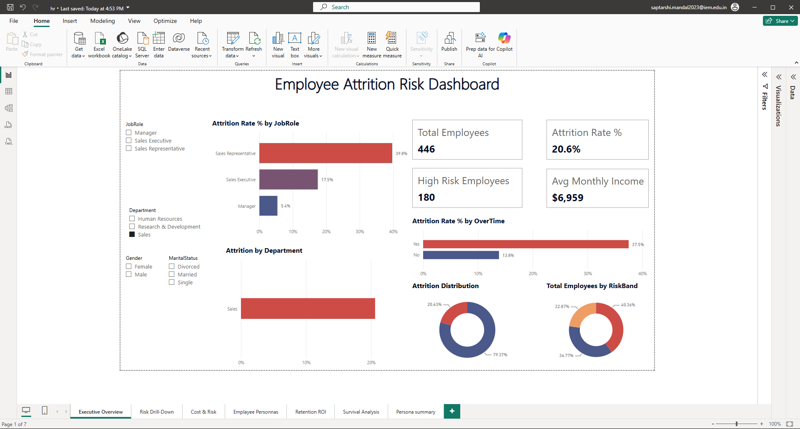

PROJECT CASE STUDY
HR Employee Attrition Analysis
Problem, process, evidence and what I would improve next.

The problem
Explore where employee attrition is concentrated and turn that analysis into questions HR can investigate.
Dataset
1,470 IBM HR sample records covering job roles, overtime, tenure, income and attrition. This is an educational sample, not a live employer dataset.
My contribution
Built the Python exploration, visual analysis, logistic regression workflow, risk-scored exports and Power BI report.
Approach
Validate records and remove constant/ID fields; compare attrition across segments; one-hot encode categories; use a stratified 75/25 split and standardize the training data; fit class-balanced logistic regression.
Results
The saved project reports 77.7% held-out accuracy and 0.81 ROC-AUC. Existing analyses show higher observed attrition among overtime workers. The screenshot below is the actual Power BI report with Sales selected: its 446 employees are a filtered subset, not the full dataset.
Limitations
Associations do not establish why people leave. Model scores are not employment decisions. Results need external validation and subgroup evaluation; retention recommendations have not been tested for causal impact.